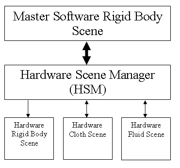

PhysX Hardware Scenes
See the Dynamics section for a general
description of scenes.
Creating a Software Master Scene
To take advantage of the PhysX processor the user needs to
consider how they will be using the SDK. There are a couple of
options with
respect to hardware support. One option is to create a master software
scene and have the Hardware Scene Manager (HSM) handle any hardware accelerated objects by way of
compartments.
Hardware objects can include rigid bodies cloth or fluids.

To create a scene of this type, use:
sceneDesc.simType = NX_SIMULATION_SW;
Creating a Hardware Master Scene
Alternatively it is possible to create a hardware master, with
compartments also running in hardware. This means that by default the
simulation runs in hardware. But there
is still the option of running cloth and fluids along with it in the
same
way as if the master scene is software. The rigid body scene may also
be useful if the user wishes to run the scene in restricted mode
(see below), since the rigid body compartment provides a way to extend
the supported object counts.
To create a scene of this type, use:
sceneDesc.simType = NX_SIMULATION_HW;
NOTE: It is no longer possible to create a pure hardware fluid scene.
A fluid will always reside in a compartment.
See Hardware Support for
details
concerning limitations of hardware scenes.
See Hardware Detection for
details concerning detection of hardware and disabling all hardware
support.
Example - Hardware Master Scene
gPhysicsSDK = NxCreatePhysicsSDK(NX_PHYSICS_SDK_VERSION, 0, &gErrorStream);
if(!gPhysicsSDK)
return;
// Create a scene
NxSceneDesc sceneDesc;
//...
#ifdef USE_HARDWARE
sceneDesc.simType = NX_SIMULATION_HW;
#endif
gScene = gPhysicsSDK->createScene(sceneDesc);
Restricted Scenes
Hardware scenes can run in two modes, restricted and normal. When
running in restricted mode the hardware performs the broad phase which
leads to a limitation of 4000 volumes (actors), or slightly more depending on memory usage (up to
a theoretical max of 4080).
Alternatively in un-restricted
mode the broadphase is performed in software and there only limitation is memory, currently set at 64k shapes. The trade off is that running the broadphase in
software will result in additional CPU usage.
If the 4000 volume limit proves a problem and the user still wishes to run
the broadphase on hardware then additional scenes can be created, since
each scene has an independent limit. In this case the user must take
care of mirroring appropriate objects between scenes.
To enable restricted mode:
sceneDesc.flags |= NX_SF_RESTRICTED_SCENE
Compartments default to using the mode of the master scene; however, you can change this by clearing the
NX_CF_INHERIT_SETTINGS flag in the compartment descriptor and then setting (or not setting) NX_CF_RESTRICTED_SCENE
before you call createCompartment.
Note: Restricted scenes preclude the use of Continuous Collision Detection.
API Reference
Copyright © 2008 NVIDIA Corporation, 2701 San Tomas Expressway, Santa Clara, CA 95050 U.S.A. All rights reserved. www.nvidia.com